Key Idea
If intervening on a candidate decreases the coarse prediction, that candidate provides support for the original prediction.
CoRE converts these measured prediction effects into graded weak supervision and distills them into a student that directly predicts fine-grained support from the original video.
Abstract
Perceived risk in driving evolves over time and may be supported by specific scene entities, yet supervision is typically limited to coarse video-level judgments. Learning when supporting evidence emerges and which entities support a risk predictor would ordinarily require costly temporal- and entity-level annotations. We introduce CoRE, a weakly supervised coarse-to-fine framework that learns fine-grained prediction support from coarse video supervision.
CoRE first trains a video-level predictor and then freezes it. Structured interventions over candidate temporal regions or entity tracks measure how each candidate changes the coarse prediction, producing graded prediction-effect targets. These targets are distilled into a student that directly predicts temporal and entity support from the original video, without requiring interventions at inference.
We evaluate this learning principle across three complementary settings: RISEE tests perceived-risk support from subjective clip-level judgments without temporal or entity-level risk annotations; DoTA provides independent temporal event annotations for evaluating weakly supervised traffic-anomaly localization; and UCF-Crime tests whether the same coarse-to-fine mechanism extends to a standard non-driving anomaly-detection benchmark. Across these settings, CoRE learns informative fine-grained support from coarse supervision, with strong temporal localization on DoTA and competitive performance on UCF-Crime.
How CoRE Works
CoRE separates coarse prediction from fine-grained support learning. A teacher first learns the available video-level task using only coarse supervision. Once frozen, the teacher is probed through structured interventions over temporal regions and entity candidates.
Prediction changes quantify how strongly each candidate supports the original response. These effects become graded weak targets for a separately initialized student. At inference, the teacher and intervention procedure are removed, and the student predicts the coarse response and fine-grained support in a single forward pass.
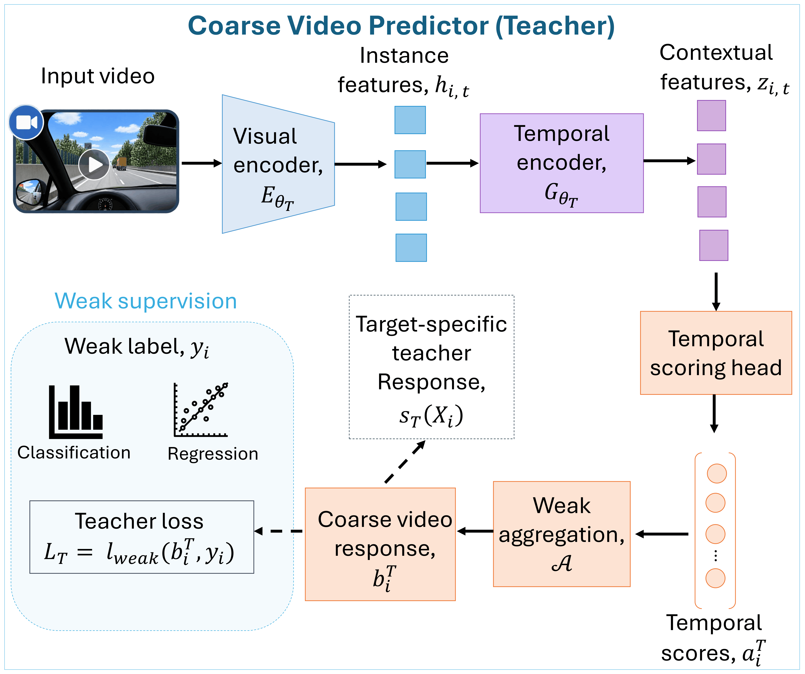
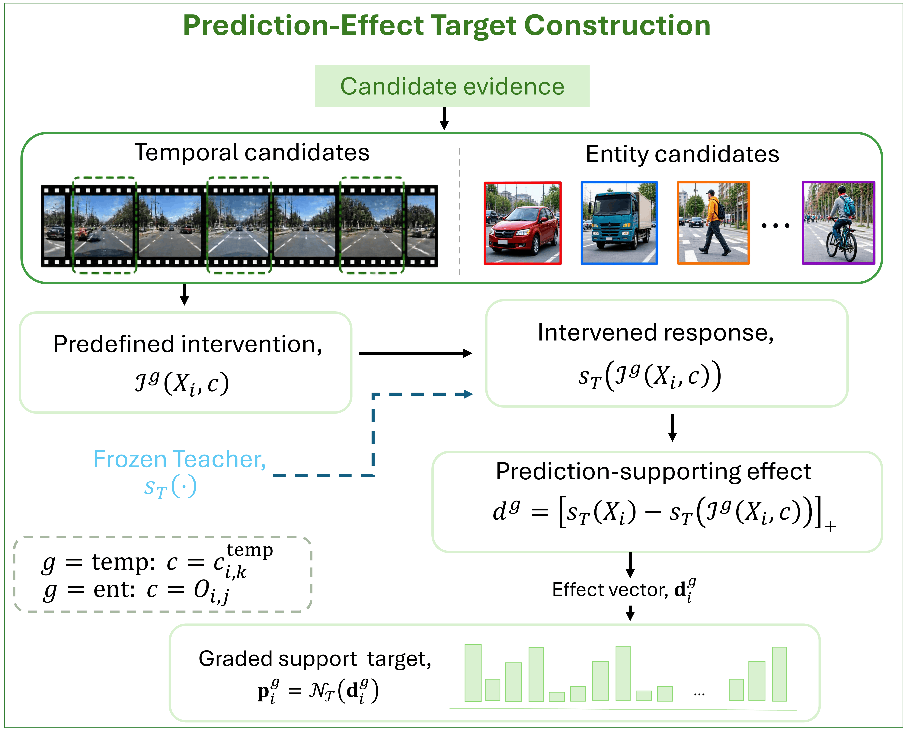
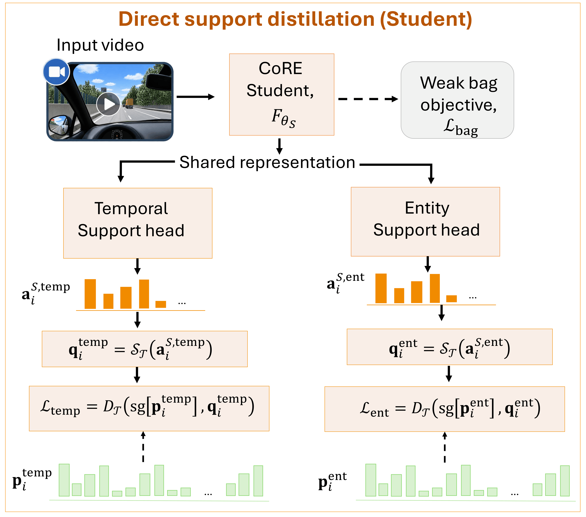
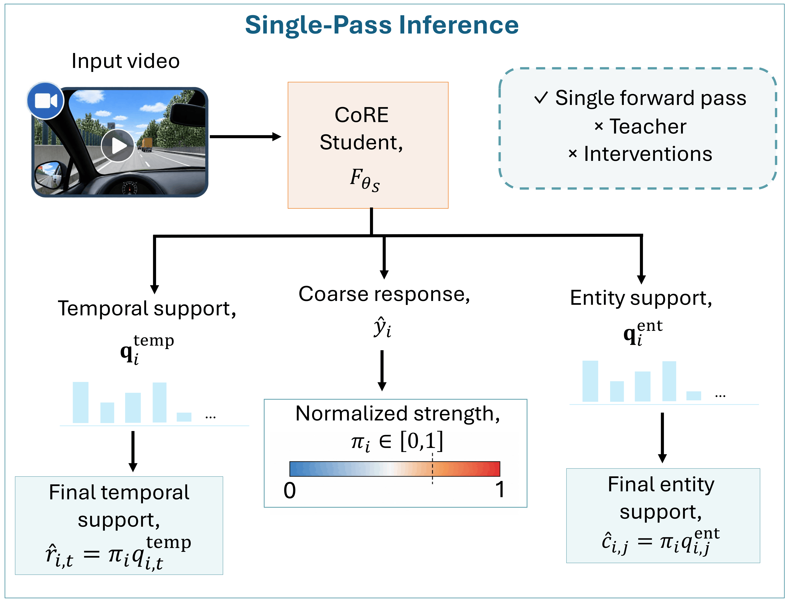
Overview of CoRE. A coarse video predictor generates prediction-effect targets for temporal and entity candidates. These effects are distilled into a student that directly predicts support without interventions at inference.
Results at a Glance
0.542
RISEE
Temporal support
effect correlation
0.744
DoTA
Frame AUC
with CLIP ViT-B/32
85.68%
UCF-Crime
Frame-level AUC
with I3D RGB
Complementary Evaluation
RISEE
RISEE provides subjective clip-level human perceived-risk judgments but no temporal or entity-level perceived-risk annotations. It tests whether fine-grained prediction support can be recovered from coarse subjective supervision alone.
DoTA
DoTA provides independent temporal annotations for traffic anomalies. These annotations are never used to train CoRE and therefore test whether support learned from coarse video labels corresponds to meaningful event timing.
UCF-Crime
UCF-Crime contains long surveillance videos and diverse non-driving anomalies. It tests whether the same prediction-effect learning principle extends beyond driving and continuous perceived-risk supervision.
Perceived-Risk Support on RISEE
Attention MIL and soft top-k MIL provide useful video-level instance scores, but their selected temporal regions show weak or negative agreement with measured prediction effects. CoRE instead achieves a selected prediction drop of 0.320, a 0.245 gain over random intervention, and a 0.542 support-effect correlation.
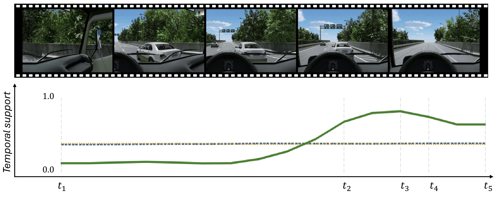
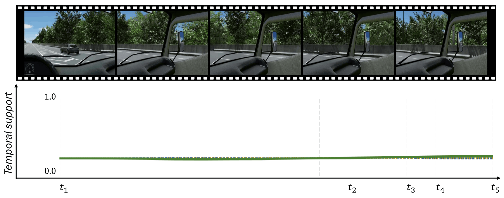
Temporal support on contrasting RISEE clips. CoRE increases support as the high-risk interaction develops while remaining suppressed in the low-risk example.
Temporal Localization on DoTA
DoTA provides temporal event annotations that are never observed during training. CoRE achieves the strongest performance across evaluated methods under both feature banks. With CLIP ViT-B/32, CoRE reaches 0.744 frame AUC, 0.514 AP, 0.364 F1@0.5, and 0.429 best tIoU.
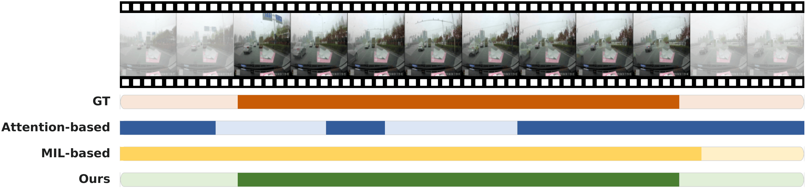
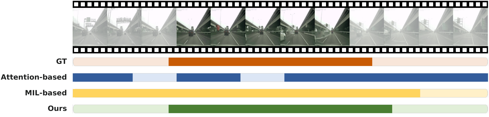
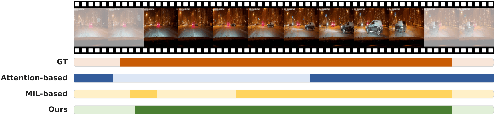
Qualitative temporal localization on DoTA. Ground-truth intervals are compared with competing weakly supervised methods and CoRE on the same videos.
Generalization to UCF-Crime
CoRE obtains 85.68% frame AUC on UCF-Crime, exceeding our controlled RTFM (84.30%) and MGFN (82.79%) reproductions while remaining competitive with recent specialized methods.
Performance on long surveillance videos with different scenes and anomaly categories shows that prediction-effect learning is not restricted to driving or continuous perceived-risk supervision.
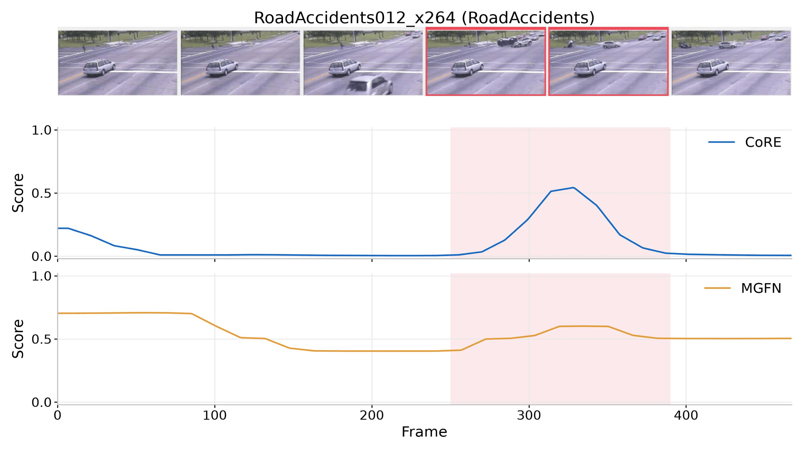
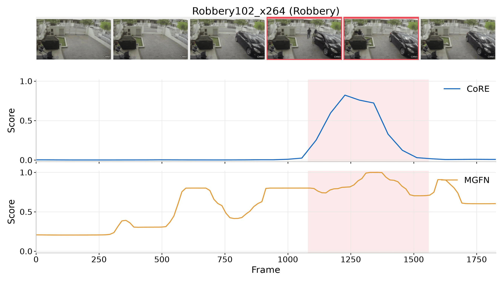
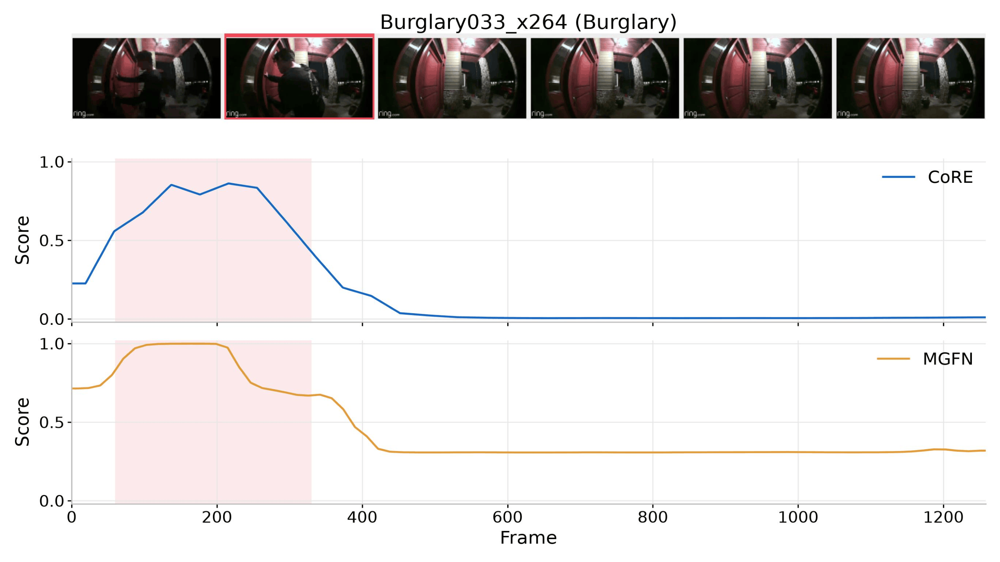
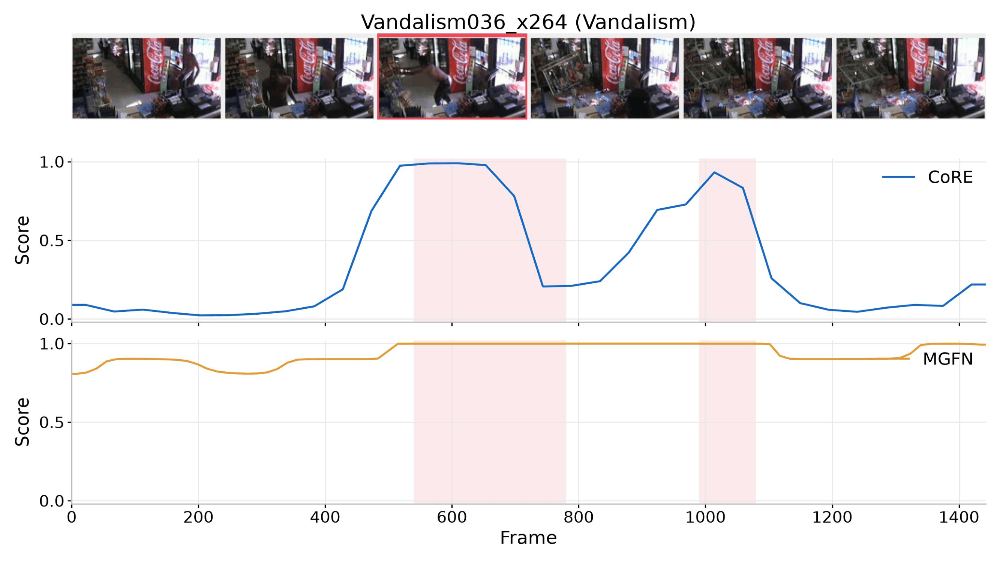
Qualitative temporal localization on UCF-Crime. Each example shows video frames, the annotated anomaly interval, and temporal scores produced by CoRE and MGFN.
Entity Support on RISEE
CoRE applies the same prediction-effect principle to tracked scene entities. Because RISEE provides no entity-level perceived-risk labels, support is evaluated against held-out entity intervention effects. The retained CoRE formulation achieves the largest selected effect, the largest gain over random selection, and the lowest selection regret among the evaluated graded-support designs.
| Method | Drop ↑ | Gain ↑ | Effect ρ ↑ | NDCG@3 ↑ | Regret ↓ |
|---|---|---|---|---|---|
| Hard top-track target | 0.220 | 0.094 | 0.425 | 0.747 | 0.110 |
| Soft effect distribution | 0.237 | 0.111 | 0.381 | 0.739 | 0.093 |
| CoRE + interaction | 0.232 | 0.106 | 0.358 | 0.717 | 0.098 |
| CoRE + interaction + temporal | 0.242 | 0.116 | 0.348 | 0.727 | 0.088 |
| CoRE | 0.243 | 0.117 | 0.388 | 0.746 | 0.087 |
Higher Drop, Gain, Effect ρ, and NDCG@3 are better; lower Regret is better. Evaluation uses identical retained tracks across variants.
Takeaway
A coarse video label can supervise more than the final prediction.
By measuring how structured candidate interventions change a trained predictor, CoRE converts coarse supervision into temporal and entity-level prediction support. The resulting student predicts this support directly, providing fine-grained video understanding without corresponding fine-grained training labels.
BibTeX
@misc{hamid2026coreweaklysupervisedcoarsetofine,
title={CoRE: Weakly Supervised Coarse-to-Fine Risk Evidence Learning in Driving Videos},
author={Kaiser Hamid and Can Cui and Nade Liang},
year={2026},
eprint={2608.25344},
archivePrefix={arXiv},
primaryClass={cs.CV},
url={https://arxiv.org/abs/2608.25344},
}